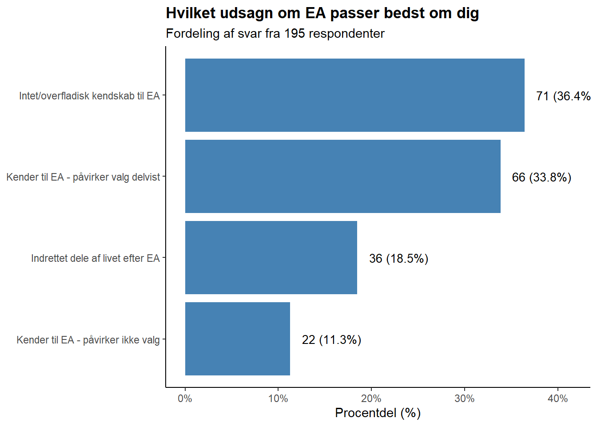

################################# 1) Load packages and data ################################## Load required packageslibrary(tidyr)library(dplyr)library(ggplot2)library(scales)library(stringr)### Load post-donation survey samplesurvey <-read.csv("~/Desktop/GE/paste-5f89ce518f963ce8.txt")
Hvilke to ting ville du først nævne, hvis du skulle anbefale Giv Effektivt til andre?
Show code
# Create a shorter name for the variablecolname <-"Hvilke.to.ting.ville.du.først.nævne..hvis.du.skulle.anbefale.Giv.Effektivt.til.andre."# Split the semicolon-separated values into separate rowssurvey_split <- survey %>%separate_rows(all_of(colname), sep =";") %>%mutate(across(all_of(colname), trimws)) # Remove any whitespace# Calculate frequencies and percentagesresponse_percentages <- survey_split %>%count(across(all_of(colname))) %>%mutate(percentage = n /sum(n) *100) %>%arrange(desc(percentage))# Create a function to wrap text at a specified widthwrap_text <-function(text, width =40) {sapply(text, function(x) {paste(strwrap(x, width = width), collapse ="\n") })}# Add wrapped text variableresponse_percentages <- response_percentages %>%mutate(wrapped_text =wrap_text(.data[[colname]], width =40))# Create the plot with wrapped textggplot(response_percentages, aes(x =reorder(wrapped_text, percentage), y = percentage)) +geom_bar(stat ="identity", fill ="steelblue") +coord_flip() +labs(title ="Hvilke to ting ville du først nævne,\nhvis du skulle anbefale Giv Effektivt til andre?",subtitle ="Procentdel af besvarelser",x =NULL, # Remove x-axis label as it's redundanty ="Procentdel (%)" ) +theme_classic() +scale_y_continuous(labels =function(x) paste0(x, "%"), limits =c(0, max(response_percentages$percentage)+5)) +geom_text(aes(label =sprintf("%.1f%%", percentage)), hjust =-0.2,size =3) +theme(axis.text.y =element_text(size =9),plot.title =element_text(face ="bold"),plot.margin =margin(r =30) # Add right margin for percentage labels )
Hvad skal vi ændre, for at du anbefaler os til flere?
Show code
# Clean up responses - lowercase, remove extra spacesfeedback_df <- survey %>%mutate(response_clean =str_trim(`Hvad.skal.vi.ændre..for.at.du.anbefaler.os.til.flere.`),response_clean =tolower(response_clean))# Create a categorization function for the feedbackcategorize_feedback <-function(text) {if (is.na(text) || text =="") {return("No Response") }# Define patterns for categories more_causes <-"klima|climate|dyrevelfærd|dyrerettighed|dyr|longterm|flere velgørenhedsfonde|breddere udvalg" more_feedback <-"feedback|information|mere synlighed|billeder|videoer|hvor hjælpen når hen|gennemsigtighed|oversigt over beløb|oplysninger|ved mere" easier_sharing <-"delbar|dele|stickers|kommunikere|some|social|anbefale velgørenhed" public_awareness <-"offentlighed|pr|presseindsats|mere kendt|ud til folket" personalization <-"selv at vægte|specifikke|specifikt|vælge|selv vælge" communication <-"folkelig|mindre akademisk|mere nede på jorden|flere billeder" tax <-"tax deduction" nothing_needed <-"perfekt|intet|ingenting|ved ikke"# Apply pattern matchingif (str_detect(text, more_causes)) {return("More Cause Areas") } elseif (str_detect(text, more_feedback)) {return("More Transparency/Feedback") } elseif (str_detect(text, easier_sharing)) {return("Easier Sharing/Communication") } elseif (str_detect(text, public_awareness)) {return("Increased Public Awareness") } elseif (str_detect(text, personalization)) {return("More Personalization Options") } elseif (str_detect(text, communication)) {return("More Accessible Communication") } elseif (str_detect(text, tax)) {return("Tax Support") } elseif (str_detect(text, nothing_needed)) {return("Nothing Needed/Satisfied") } else {return("Other") }}# Apply categorizationfeedback_df <- feedback_df %>%mutate(feedback_category =sapply(response_clean, categorize_feedback))# Count the frequencies and calculate percentagescategory_counts <- feedback_df %>%filter(feedback_category !="No Response") %>%count(feedback_category) %>%mutate(percentage = n /sum(n) *100) %>%arrange(desc(n))# Create a histogram of feedback categoriesggplot(category_counts, aes(x =reorder(feedback_category, n), y = percentage)) +geom_bar(stat ="identity", fill ="steelblue") +coord_flip() +labs(title ="Hvad ville gøre dig mere tilbøjelig til at anbefale Giv Effektivt?",subtitle ="Procentdel af (kategoriserede) svar",x =NULL,y ="Procentdel (%)" ) +theme_classic() +scale_y_continuous(labels =function(x) paste0(x, "%"), limits =c(0, max(category_counts$percentage)+10)) +geom_text(aes(label =sprintf("%d (%0.1f%%)", n, percentage)), hjust =-0.2,size =3.5) +theme(plot.title =element_text(face ="bold"),axis.title.y =element_text(face ="bold") )
Hvordan opdagede du Giv Effektivt?
Show code
# Create a shorter variable name for readabilitycolname <-"Hvordan.opdagede.du.Giv.Effektivt."# Split the semicolon-separated values into separate rowssurvey_split <- survey %>%separate_rows(all_of(colname), sep =";") %>%mutate(across(all_of(colname), trimws)) # Remove any whitespace# Clean up the responses - lowercase, remove extra spacessurvey_split <- survey_split %>%mutate(response_clean =str_trim(.data[[colname]]),response_clean =tolower(response_clean))# Create a categorization functioncategorize_response <-function(text) {# Create patterns to match podcast_pattern <-"podcast|p1|dr|supertanker|radio" ea_pattern <-"effective altruism|effektiv altruisme|ea forum|peter singer|80000|8000|singer" personal_pattern <-"anbefaling|person|familie|mundtlig" web_pattern <-"søgning|google|bing|web" social_pattern <-"facebook|linkedin|twitter|x|sociale|medie" givewell_pattern <-"givewell|giving what we can|gwwc" media_pattern <-"zetland|avis|information|medie|article|artikel"# Apply pattern matchingif (str_detect(text, podcast_pattern)) {return("Podcast/Radio") } elseif (str_detect(text, ea_pattern)) {return("Effective Altruism") } elseif (str_detect(text, personal_pattern)) {return("Personal Recommendation") } elseif (str_detect(text, web_pattern)) {return("Web Search") } elseif (str_detect(text, social_pattern)) {return("Social Media") } elseif (str_detect(text, givewell_pattern)) {return("GiveWell/GWWC") } elseif (str_detect(text, media_pattern)) {return("News Media") } elseif (str_detect(text, "husker")) {return("Don't Remember") } else {return("Other") }}# Apply categorizationsurvey_split <- survey_split %>%mutate(discovery_category =sapply(response_clean, categorize_response))# Count the frequencies and calculate percentagescategory_counts <- survey_split %>%count(discovery_category) %>%mutate(percentage = n /sum(n) *100) %>%arrange(desc(n))# Create a histogram of response categoriesggplot(category_counts, aes(x =reorder(discovery_category, n), y = percentage)) +geom_bar(stat ="identity", fill ="steelblue") +coord_flip() +labs(title ="Hvordan opdagede du Giv Effektivt?",subtitle ="Procentdel af (kategoriserede) svar",x =NULL,y ="Procentdel (%)" ) +theme_classic() +scale_y_continuous(labels =function(x) paste0(x, "%"), limits =c(0, max(category_counts$percentage)+10)) +geom_text(aes(label =sprintf("%d (%0.1f%%)", n, percentage)), hjust =-0.2,size =3.5) +theme(plot.title =element_text(face ="bold"),axis.title.y =element_text(face ="bold") )
Hvilket udsagn om effektiv altruisme (EA) passer bedst om dig?
Show code
# Simplify response categories for better readability in plotsurvey_ea <- survey %>%mutate(ea_response =`Hvilket.udsagn.om.effektiv.altruisme..EA..passer.bedst.om.dig.`,response_simplified =case_when(grepl("Jeg har intet/overfladisk kendskab til EA", ea_response) ~"Intet/overfladisk kendskab til EA",grepl("Jeg kender til EA og det har påvirket", ea_response) ~"Kender til EA - påvirker valg delvist",grepl("Jeg har indrettet dele af mit liv efter EA", ea_response) ~"Indrettet dele af livet efter EA",grepl("Jeg kender til EA, men det påvirker ikke", ea_response) ~"Kender til EA - påvirker ikke valg",TRUE~ ea_response ))# Count the frequencies and calculate percentagescategory_counts <- survey_ea %>%count(response_simplified) %>%mutate(percentage = n /sum(n) *100) %>%arrange(desc(n))# Create a horizontal bar chartggplot(category_counts, aes(x =reorder(response_simplified, n), y = percentage)) +geom_bar(stat ="identity", fill ="steelblue") +coord_flip() +labs(title ="Kendskab til og påvirkning af Effektiv Altruisme (EA)",subtitle ="Fordeling af svar fra 195 respondenter",x =NULL,y ="Procentdel (%)" ) +theme_classic() +scale_y_continuous(labels =function(x) paste0(x, "%"), limits =c(0, max(category_counts$percentage) +5)) +geom_text(aes(label =sprintf("%d (%0.1f%%)", n, percentage)), hjust =-0.2,size =3.5) +theme(plot.title =element_text(face ="bold"),axis.title.y =element_text(face ="bold") )

Er der andet, du vil fortælle os?
Show code
# Clean up responses - lowercase, remove extra spacesfeedback_df <- survey %>%mutate(response_clean =str_trim(`Er.der.andet..du.vil.fortælle.os.`),response_clean =tolower(response_clean))# Create a categorization function for the feedbackcategorize_feedback <-function(text) {if (is.na(text) || text =="") {return("No Response") }# Define patterns for categories more_causes <-"klima|climate|dyrevelfærd|dyrerettighed|dyr|longterm|flere velgørenhedsfonde|breddere udvalg" more_feedback <-"feedback|information|mere synlighed|billeder|videoer|hvor hjælpen når hen|gennemsigtighed|oversigt over beløb|oplysninger|ved mere|hvad mine penge går til|hvilke organisationer|oplyse" easier_sharing <-"delbar|dele|stickers|kommunikere|some|social|anbefale velgørenhed" public_awareness <-"offentlighed|pr|presseindsats|mere kendt|ud til folket|blive mere kendte" personalization <-"selv at vægte|specifikke|specifikt|vælge|selv vælge" communication <-"folkelig|mindre akademisk|mere nede på jorden|flere billeder|farver|hjemmeside" tax <-"skatt|fradrag|tax deduction" nothing_needed <-"perfekt|intet|ingenting|ved ikke|nej|næ|tak for|godt arbejde|awesome|beholde|fortsæt" volunteer <-"frivilligt|hjælpe"# Apply pattern matchingif (str_detect(text, more_causes)) {return("More Cause Areas") } elseif (str_detect(text, more_feedback)) {return("More Transparency/Feedback") } elseif (str_detect(text, easier_sharing)) {return("Easier Sharing/Communication") } elseif (str_detect(text, public_awareness)) {return("Increased Public Awareness") } elseif (str_detect(text, personalization)) {return("More Personalization Options") } elseif (str_detect(text, communication)) {return("More Accessible Communication") } elseif (str_detect(text, tax)) {return("Tax Support") } elseif (str_detect(text, volunteer)) {return("Volunteer Opportunities") } elseif (str_detect(text, nothing_needed)) {return("Nothing Needed/Satisfied") } else {return("Other") }}# Apply categorizationfeedback_df <- feedback_df %>%mutate(feedback_category =sapply(response_clean, categorize_feedback))# Count the frequencies and calculate percentagescategory_counts <- feedback_df %>%filter(feedback_category !="No Response") %>%count(feedback_category) %>%mutate(percentage = n /sum(n) *100) %>%arrange(desc(n))# Create a histogram of feedback categoriesggplot(category_counts, aes(x =reorder(feedback_category, n), y = percentage)) +geom_bar(stat ="identity", fill ="steelblue") +coord_flip() +labs(title ="Er der andet, du vil fortælle os?",subtitle ="Procentdel af (kategoriserede) svar",x =NULL,y ="Procentdel (%)" ) +theme_classic() +scale_y_continuous(labels =function(x) paste0(x, "%"), limits =c(0, max(category_counts$percentage)+10)) +geom_text(aes(label =sprintf("%d (%0.1f%%)", n, percentage)), hjust =-0.2,size =3.5) +theme(plot.title =element_text(face ="bold"),axis.title.y =element_text(face ="bold") )